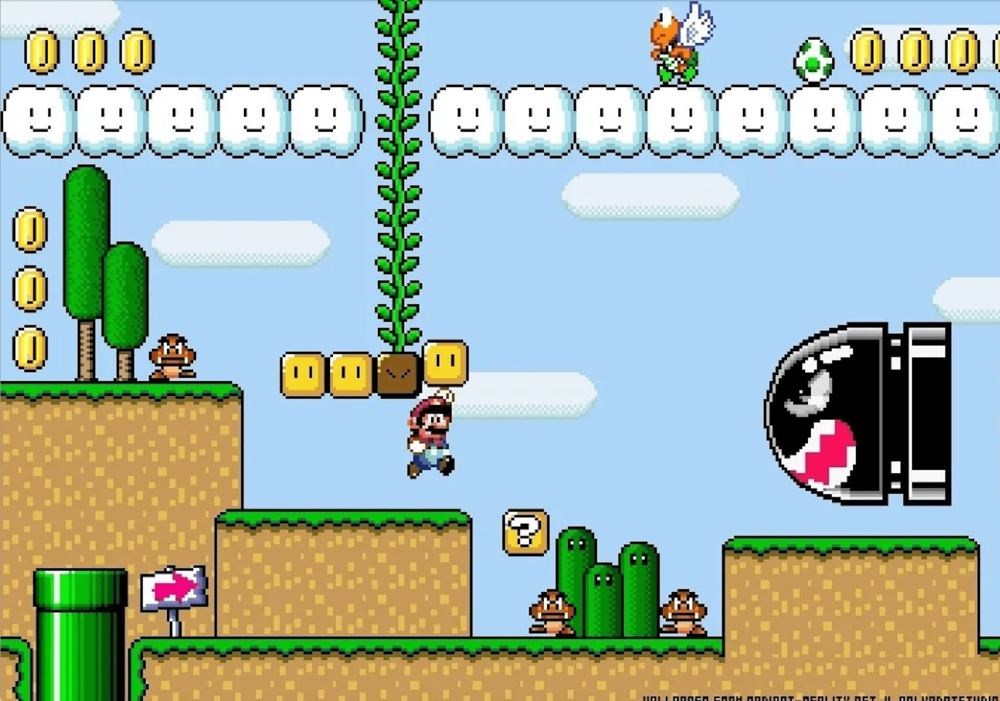
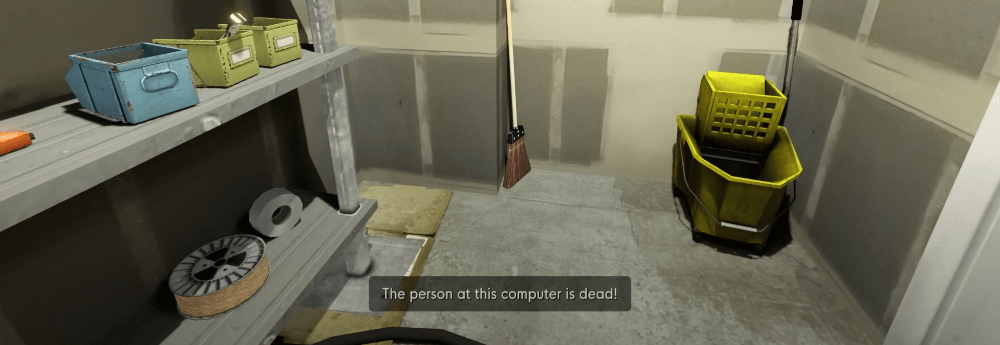

Abstract
The gaming industry has grown tremendously over the last few years and it doesn't seem like it's going to stop any time soon. Games are increasingly becoming a larger part of many lives. Companies are creating more and more games that use different strategies to motivate players to play. The goal is to consciously arouse emotional responses in order to provide motivation. Based on this, it becomes important to understand the emotional influence games have on humans.
This thesis explores how emotional design in games affects players' emotions and behaviors, showcasing both positive and negative impacts in the “real” world. It demonstrates the power of game designers and their possibility to create beneficial outcomes for players.
I use specific game examples alongside academic articles, studies and books to answer this question. It was shown that the use of intentional designed emotions can give players a wide range of emotional experiences, from joy to guilt to anger.
Playing games can facilitate personal growth by providing opportunities to learn social skills, grow empathy, and develop emotional resilience. Negative emotions, such as aggression, can also arise with frustration, but this does not necessarily lead to violent behavior. It is possible for games to intentionally manipulate players emotions in a way that can lead to negative emotions being exploited for commercialization.
With the continued growth of the video game industry and the increasing importance of emotional intelligence and mental health in society, it's important that we continue to look at how games impact gamers emotional experiences and how we can use that knowledge to create games that don't only entertain, but also have a positive impact on the lives of the players.
Keywords: Emotional Design, Game Design, Emotional influence, Manipulation
Introduction
According to the Dutch cultural historian Johan Huizinga, humans are and always have been Homo ludens. Homo ludens describes humans as people who play and are not just concerned with their spirit, reason or being active. Huizinga ranks the playing human (Homo ludens) next to the Homo sapiens as a thinking human and the creating human, also called Homo faber. For him, culture grew out of play, which would mean that play predates culture. The activity of play is a rule-limited voluntary action or occupation that is one of the essential characteristics of human beings. Many cultural achievements, such as politics, have emerged from playful activities (Huizinga, 1987). Progress comes from playing and thus has the ability to overcome old structures for new innovations. Everyone who plays thus leaves the boundaries of the "real" world and creates progress by experiencing something new.
Video games have become a point of inflection in our culture in recent years. In general, it can be said that over the last years the gaming industry has grown almost linear and the interest in video games doesn't seem to slow down in the near future (see figure 01).
Figure 01 Clayton Wadsworth’s graphic of “The rise of gaming revenue visualized”.
The sales figures of the world's best-selling video games show that a game like Minecraft (Mojang Studios, 2011) come close behind high-grossing blockbuster movies like Avatar (Cameron, 2009) (F. Tenzer, 2022; Statista Research Department, 2023). Thus, the sales figures for video games are now in the same league as films and books. It can no longer be denied that video games are in the minds of millions of people every day. Furthermore, not only are articles written about video games in highly cultural magazines such as the German Spiegel or the New York Times (“Games.” DER SPIEGEL, n.d.; “Gaming.” The New York Times, n.d.), but there are also museums dedicated to games, such as the Computerspielemuseum (engl. computer games museum) in Berlin, Germany.
Movies and books are a superb option to spend time on, but indeed it can be stated that there is a reason for the growing willingness to play video games. Games are a medium that comes along with interesting differences in contrast to other media which will be further discussed later.
Companies have recognized that the way to achieve the goal of creating a great hit is to incorporate emotional engagement to the developmental process of video games. It's becoming increasingly important that the audience has an emotional response when playing a game, as it has been shown to affect how often a game is played. Consequently, games have become more cinematic, with multiple characters and epic story lines (Trevor can Gorp, Edie Adams, 2012, P. 8). Therefore, emotional design is important to consider when creating a game. Any design that consciously evokes emotional reactions falls within emotional design. Emotions dominate our experiences, decision making, commands attention and enhances some memories while minimizing others, coloring our realities (Trevor can Gorp, Edie Adams, 2012, P. 16). Thus, it is even more interesting to investigate how far these emotions can be influenced and what effects this can have on the player.
Over the years of playing video games myself I recognized that some people criticize video games as a medium, claiming that it makes people lazy, insensitive, numb to other people, unempathetic, and promotes violence and addiction. All of these descriptions assume that every game and genre is the same. That assessment is about as accurate as claiming that all existing films make you cry. Similar to films, there are games that belong to different genres, are of different quality and can hit you emotionally different. Nevertheless, it is interesting and important to follow up on these statements.
In my bachelor thesis, I will demonstrate various ways and strategies of designers that I have encountered in games, highlighting how they affect players' emotions and the possible implications that arise for them in the real world. Both positive and negative impacts will be showcased, with the ultimate goal to display how game designers hold the power to future-proof such impacts into something beneficial.
Part One:
Emotions
Emotions
Before we go deeper into how emotions play a role, I will briefly explain the concept of emotion. An emotion is the excited state of the mind and is therefore synonymous with physical excitement. The modern English word emotion moved in from the French word émotion during the 17th century and means excitement (Digital Dictionary of the German Language, 2023).
Emotions consist of complex processes in the body. They help to react to everyday situations. Ultimately, they help to communicate with other people without using words (Studyflix). In this way, triggering emotions in design can also be used to communicate without direct speech. An example would be the flying faced rocket Bullet Bill in Super Mario World by Nintendo Co., Ltd.. If the player-controlled video game character Mario comes to close to this rocket, the player tries to avoid this rocket by jumping over or crouching under it. The player instinctively follows the game's logic, without any negative experiences from the rocket or explanation. The viewer can already guess that this rocket is dangerous. This is evoked by the sharp teeth of the rocket, which resemble the teeth of a predator (see figure 02). Further introduction to the gameplay becomes unnecessary as players already possess instinctive information that is accessed through emotional responses triggered by intentionally designed stimuli within the game. We learn to condition ourselves to repeat good experiences and avoid bad ones. Our expectations influence our decisions (Hodent, 2020). People make decisions based on their emotions. It becomes important when the body has to react quickly to a situation, for example when the circumstances are dangerous (Studyflix). Emotional decision-making happens with cognitive processes. According to a news article at Psychology Today, the average person makes around 35,000 decisions per day (Krockow, 2018). Cognitive processes help to evaluate a decision by comparing past experiences with the current situation. If we have experienced a situation before, it is much easier to make a decision based on it. As a result, it can be concluded that the more different experiences we collect, the better we can decide in situations. Therefore, a person who has never felt extreme joy or sadness has trouble understanding these statements. In order to make a decision we need to be able to assess the situation, through comparison and interpretation (Studyflix).

Figure 02 Super Mario World by Nintendo
While there is no clear definition of emotion, the term “emotion” can be defined as an internal feeling and the reaction that follows. Emotions consist of feelings, cognitive processes and physical reactions (Studyflix). For example, while a feeling is sadness or anger, a physical reaction is something like sweating or heart racing. A cognitive process can be remembering, comparing or making decisions. Therefore, feelings are just part of emotions, but they help to classify experiences quickly.
Can Emotions be Influenced?
“Perhaps I know best why it is man alone who laughs; he alone suffers so deeply that he had to invent laughter.” - Friedrich Nietzsche, philologist and philosopher
Emotions can be influenced. You are welcome to try it yourself. Next time you're sad, stand in front of the mirror and just laugh. Watch what happens.
Sarah Stevenson's article “How Smiling Affects Your Brain” describes how when you smile, the feel-good neurotransmitters dopamine, endorphins, and serotonin are released. All of this helps your body relax and serotonin acts as an antidepressant/mood enhancer (Stevenson, 2012). In summary, it can be said that just laughing makes a person feel better. In this case you have manipulated your own feelings for the better in this case. However, this can also have negative consequences if it is exploited by third parties.
Part Two:
Impact
of Games
“People talk about how games don’t have the emotional impact of movies. I think they do – they just have a different palette. I never felt pride, or guilt, watching a movie.” – Will Wright, designer of The Sims
Convincing games aren't created by accident or random thoughts, any more than good movies or books are. A lot of work and thought goes into all these projects. Precisely planned decisions and strategies are developed to send the viewer on an emotional journey. This tries to evoke specific emotions for the experience. In games in particular, motivation is built up in the form of emotional design. Consumption media such as films differ from games in two fundamental aspects. One specific thing that sets games apart from other media is the ability to make in-game decisions, making games is a very special medium (Isbister, 2017). This increases the potential for emotions to be felt.
Decisions with Consequences
Fundamentally, games differ from other media in that they allow the player to influence the end result through their own efforts (Salen, and Zimmerman, 2010). This is not the case with other media, with a few exceptions.
For people, feelings are directly related to their goals, decisions, and their consequences (Isbister, 2017). Means that, whatever happens to the player in-game is automatically reconsidered and compared to their own goals. Accordingly, a person has been shown to feel joy and enrichment when things work out exactly as one would like, and anger when things don't work out (Van Reekum, et al., 2004). As a result, every in-game decision you make triggers emotional reactions in you.
Researchers were able to find out that a person's brain reacts differently when you play actively or just watch something passively. A gamer's brain displays more reward and emotion just from the act of playing (Cole, et al., 2012). A human brain reacts much more strongly to driving a car in the game than by reading about it. It's more like actually driving a car in the real world. Both, the in-game action and real-life action are characterized by constantly made decisions that have consequences.
Accordingly, games can trigger guilt by making decisions. This has happened to me several times while playing. Once, as I was playing an open-world game called Skyrim, I “accidentally” killed a chicken to see if that was possible. I'm aware that this chicken was virtual, but I still felt guilty. Funnily enough, the people in the in-game village thought so too and started chasing me.
Flow-state
In order to take positives from a game, it is important to keep a game interesting throughout the run. For this, it is important that a creator manages to completely absorb the player with the activity, according to the psychologist Mihaly Csikszentmihalyi. Csikszentmihalyi calls this status the “flow”. It is important to keep the balance between too big of a challenge and too little. Depending on that, one is otherwise too frustrated or to bored (see figure 03).
Figure 03 Chen’s diagram of the “flow zone”.
As the author Csikszentmihalyi puts it beautifully in his book Finding Flow, games are “developed over the centuries for the express purpose of enriching life with enjoyable experiences” (Csikszentmihalyi, 2008).
Parasocial Emotions
I'm sure everyone knows that when you watch your favorite series or read a book, you suddenly feel connected to the characters and empathize with them. You laugh and cry with the characters. Social emotions arise and you empathize. It feels like you know each other. This phenomenon is called “parasocial interaction” (PSI, para-social interaction) in psychology.
This means that when we are immersed in a social interaction, our brain makes us believe we are in a real social interaction. Even if that action isn't happening with real people and or we're actually interacting with someone. Our brain can build up social emotions even if they are one-sided. As a result, even a non-real character in the game can tempt us to feel emotions such as anger, compassion or joy. Empathy is a reason for connecting to the playable character (Schell, 2020, p.123).
A great example of creating an emotional connection with the character we are playing is The Stanley Parable. The Stanley Parable, released in 2013, is a first-person exploration game. You are accompanied in the game, playing as Stanley, by a narrator's voice, which reacts to the player's decisions. Although the game can be "won" within 10 minutes if you follow the narrator's instructions, many other choices you encounter along the way encourage the player to explore the game further, to possibly come across different endings.
The game emphasizes the identification/emotional connection of Stanley with the player by having the narrator address both Stanley (he) and you the player interchangeably (see figure 04).
Figure 04 A compilation of several screenshots from the game The Stanley Parable by Davey Wreden et al.
At some point the narrator even breaks the fourth wall and talks directly to the player in front of their computer (see figure 05).

Figure 05 A screenshots from the game The Stanley Parable by Davey Wreden et al., 2013
Connections in games can also be established with Non-Player-Character's (NPC), especially if you spend a long time together and struggle through problems together or when the NPC even sacrifices itself (Isbister, 2017). Personally, I've had many experiences with NPCs before, but the character Ellie from The Last of Us has stuck in my mind. In The Last of Us, player-controlled smuggler Joel and a young girl named Ellie must work together to survive in a post-apocalyptic world. Ellie may only be an NPC, but she plays an important role in the story. She helped me in combat situations, and I learned more and more about her as the game progressed and her conversations with Joel and thus with me were particularly convincing (see figure 06).
Figure 06 A compilation of several screenshots from the game The Last of Us by Naughty Dog, 2013
Any interactions, whether verbal or “physical” felt very authentic. Such interactions can move the player beyond just having “parasocial” feelings into consequential social experiences with accompanying social emotions (Isbister, 2017).
Social Emotions
Contrary to many prejudices, video games are often played together. Here, I don't mean the parasocial experience with virtual characters, but with real people from the real world. What we know about social interactions in general is that humans thrive and flourish in them (Isbister, 2017). Furthermore, science has shown that a human interacting with real people shows different emotional responses compared to NPC’s. For the player it is more fun to play with people than alone (Mandryk, Inkpen, 2004).
One of my first games on my PlayStation was Little Big Planet. The game was released for the first time in 2008 and has since had several successors. The game is a puzzle-platformer where you have to solve puzzles. What made the game special for me was the option to play together. In this way, the puzzles could be solved in collaboration with two people (see figure 07).

Figure 07 In Little Big Planet “two characters try to solve a puzzle together” (Media Molecule, 2014)
Solving and completing these puzzles together creates great feelings of connection, mutual liking and rapport (Isbister, 2017).
Vent Anger and Frustration
Games involving physical activity, such as soccer, help the player release emotions, especially when they are overwhelming, as negative feelings often are. Virtual video games do this too, especially when there is physical action involved like playing Let’s Dance (a game franchise) on the Wii console. This allows you to cool down in a safe world (Schell, 2020).
Cheer Up
Games are often played when one is not doing particularly well. In this specific instance, engaging with games can serve as a means of escapism from daily life to cheer yourself up. Playing whimsical or fun games serves as a powerful reminder that we can still experience joy and have fun, despite life's challenges. (Schell, 2020).
Gain Perspective
Nonetheless, in times of complete overwhelm, games serve as a way to escape from the real world and its problems. This creates an opportunity when coming back to the real world to see problems more easily for what they really are (Schell, 2020).
Build Confidence
When problems in life sometimes become too big and one is often accompanied by depression and failures, we humans often start to believe that there is nothing we can do well. The result is often a perceived loss of control. What makes games so special is the ability to make choices that have consequences. Games which lead to successful end results through one's own actions gives one positive feelings of mastery. This can help remind you that you can be successful and in control of your situation (Schell, 2020).
Relax
Last but not least, sometimes it's just nice to give your brain a break in a world full of tasks and worries. Interacting with new issues that couldn't be more different from our real problems creates “emotional rest” (Schell, 2020).
All these “layering techniques for evoking social emotions onto this foundation gives games their unique power to create empathy a connection” (Isbister, 2017).
Part Three:
Another Look at Intended Uses of Emotion in Games
People can be exploited through manipulation. That is neither human nor characterized by sympathy. “But humane design has SYMPATHY for the user. It takes their side. Humanistic design is marked by a concern for the welfare of humanity. It is not antagonistic, and thus great design does not actively oppose the user’s best impulses.” says Raph Koster, a president of creative design, at the Game Developers Conference (GDC) 2012 (Koster, 2012) (see figure 08).
Figure 08 Raph Koster’s presentation slide that shows an explanation of Good Design, Bad Design and Great Design.
A humanistic game promotes independent thinking, critique, and personalized interpretation.
Anger
In the course of this thesis, I have taken up many different aspects that show how games have a positive effect on players. Games and their emotional input create a medium that allows the player to create emotions in-game, which in turn have positive consequences. The emotions evoked on purpose can vary widely, from happiness to sadness and even guilt. Even negative emotions like aggression can arise. These are emotions that often seek verbal or physical abreactions. Some fear that by playing games that are violent like first-person shooters, people will emerge who will also become violent.
From personal experience, I can say that despite playing one or two games that involved guns over the years, I don't see any indication that I've become more aggressive or violent. I can say the same with reliable certainty about the people I have met in my lifetime and have spoken about this topic. Games with guns can even increase empathy and morale when the violence depicted is used to save the world or heroically to protect or save others (Grizzard et al., 2014).
In order to let the science speak, I will quote a few more scientists below.
In 2020, a meta-analysis was published showing that games are not related to aggression:
“Overall, evidence suggested that violent video games did not have an appreciable impact on later aggression. In some cases, poorer quality studies may have exaggerated the impact of games on aggression, with better quality studies clarifying that such effects are negligible. It does not appear that regulation of violent games is likely to reduce aggression in real life.” - Dr Aaron Drummond, lead author
Prof. Christopher J. Ferguson is a psychiatrist and a member of the American Psychological Association. He wrote in 2008:
“No link, either causal or correlational, was found between violent-video-game playing and aggressive or violent acts.” - Prof. Christopher J. Ferguson, psychologist
That's not to say that aggression can't occur when playing. Rather, anger in the game arises from frustration. If there is a mismatch between a player's skill level and the level of challenge in a game, it can lead to feelings of frustration and anger, as depicted in the “Flow” model (see figure 03). The result is that the player has not gained anything here and has to look for another medium to reduce the anger.
Bad Design
(Exploids Human Nature)
“There is no such thing as neutral design?” -R.H. Thaler & C.R. Sunstein, Nudge
Art and design hold the ability to manipulate the behavior of the users. This can happen through the impact on people’s expectations and behaviors (Hodent, 2020). If you see a button on a lamp, you will press it when you want to turn on the light.
In the context of humanistic design, I previously addressed Raph Koster's definition of good, bad, and great design (see figure 08). The emotional impact of good design and great design shows sympathy for the nature of a human, but what if someone uses bad design. What if a creator knowingly uses bad design to trigger emotions that do not serve the player and their further development, but their own profit?
Fear of Missing Out
Behavioral economics has examined some examples and studied how emotions can be tricked. In the following I will talk about four examples: scarcity, fear of missing out (FOMO), loss aversion and the anchoring effect. The fear of missing out is the fear or apprehension of missing out on events that will supposedly give you a better life (Hodent, 2020). This is exploited by many companies like Square Enix for example.
Square Enix are the developers of Final Fantasy 15. In my opinion one of the most successful franchises of all time. Before the game was released in 2016, the company made the game available for pre-sale. With this they possibly wanted to make as many sales as possible. The developers tricked people into buying a game, although no one was sure if it was good. They made the game more attractive by saying that there would be extra bonus material when pre-sold, which will no longer be available after release (see figure 09).
Figure 09 A graphic that shows Amazons Final Fantasy XV pre-order.
In this example, Square Enix tempted the buyer to order soon, otherwise you will miss something. This trick is effective and unavoidable as many companies use it.
The Anchoring Effect
The anchoring effect suggests the viewer to make a bargain. This effect does this, for example, by placing two prices next to each other at the same time so that they can be compared. The supposed to be buyer sees the so-called higher “old” price and next to that the “newer”, cheaper price. This is often used on the Internet distribution platform for computer games called Steam (see figure 10).
Figure 10 This is a screenshot of Steam on 03.02.2023.
Loss Aversion
So far, we have seen that there are financial reasons to use these psychological tricks, but there are also other reasons for these strategies. For example, loss aversion can be used to make the player dedicate more and more time to the game. Loss aversion describes the fear of losing something. That pain would be greater than the pleasure of gaining something to the same degree, as seen in figure 11.
Figure 11 The value function of prospect theory was developed by Daniel Kahneman and Amos Tversky. “The s-shaped asymmetry implies, given the same variation in absolute value, there is a bigger impact of losses than of gains (loss aversion).”
I experienced that myself in the game Hogwarts Mystery. In Hogwarts Mystery, players create their own Hogwarts student character and navigate the magical school, learning spells, solving mysteries, and interacting with familiar characters from the Harry Potter series. In order to advance in the story, you have to attend classes (see figure 12). To complete the lesson completely you have to use energy points for smaller tasks (see figure 13). However, these energy points are limited (figure 14) and come back very slowly if you wait a certain amount of time (figure 15). The only problem is that the time for the lesson is running out (figure 16).
Figure 12 A screenshots from the game Hogwarts Mystery by Jam City et al., 2018
Figure 13 A close up of figure 12 from the game Hogwarts Mystery by Jam City et al., 2018
Figure 15 A close up of figure 12 from the game Hogwarts Mystery by Jam City et al., 2018
Figure 14 A close up of figure 12 from the game Hogwarts Mystery by Jam City et al., 2018

Figure 16 A close up of figure 12 from the game Hogwarts Mystery by Jam City et al., 2018
When time runs out, you don't get all the achievements. The difficulty of accepting this loss is compounded by the fact that the participant had pre-determined their desired duration for the lesson and made progress accordingly. In my case, this led me to play regularly to avoid losing anything. These tactics can lead to the player being so engrossed that they can actually become addicted by playing too much. It has been shown that excessive gaming can have many negative consequences, from loneliness, social anxiety to depression (Wang, 2019).
Scarcity
The game also employs the concept of scarcity. Scarcity, in relation to gaming, is when something is artificially made scarce, more people suddenly want it. In the game, outfits are offered occasionally for a limited time and then never again (figure 17). This makes the outfit rare and therefore more desirable. To get the outfit, you either have to pay money or play more often and longer.

Figure 17 A screenshots from the game Hogwarts Mystery by Jam City et al., 2018
Where is the Boundary
of Manipulation?
In my opinion, designers should be careful with these manipulations, especially when it comes to games. Of course, game developers also have to make profits in order to continue creating games for the audience, but where are the boundaries? This is especially important when it comes to games for children. A child's brain is not yet biologically mature enough to make adult decisions. Children do not yet have a fully developed prefrontal cortex. This part of the brain is responsible for preventing spontaneous decisions (Hodent, 2020). That's exactly the moment when you stop, in order to think, to avoid stepping into a trap or falling for loss aversion. Therefore, the problem is that the limbic system develops first where basic human tasks are accomplished, and then the prefrontal cortex (Hodent, 2020). According to Hodent (2020) the prefrontal cortex is not complete until around 23-25 years old. Here in particular, extreme attention must be paid to this, even if it is sometimes difficult to draw a line between good and bad manipulations.
Endgame:
A Few Closing
Remarks
As the video game industry continues to grow and expand, it's important to understand the emotional impact that games can have on players.
In summary, video games have both a positive and negative effect on emotional experiences. It is important to understand for designers that this can have an impact on players. On the positive side, playing games can facilitate personal growth by for example providing opportunities to learn social skills, grow empathy, and develop emotional resilience. However, video games can also have negative effects and can cause anger rather than cooling it down.
It is crucial to recognize that emotions of players in video games can be deliberately manipulated. This may result in negative emotions being exploited to drive someone to play excessively, leading to addiction or for the purpose of influencing decision-making. Hence, it is the responsibility of game designers to comprehend these implications. These manipulations are often used by companies that focus on their own benefit rather than creating a game that is for the player and their benefit.
To create games that have a positive impact on the lives of players, it's important to consider factors such as game mechanics for instance considering “the flow” of the player, storylines, believable in-game characters, and character development to promote positive emotional experiences. This would show the concern for the well-being of humanity. This is precisely what humanistic design embodies.
Overall, designers need to understand the emotional impact that video games can have on players. By taking steps to create games that promote positive emotional experiences and mental health, the video game industry can continue to grow and thrive while also having a positive impact on the lives of players.
Bibliography
Source List
Cameron, James, et al. Avatar. 20th Century Fox, 2009.
“CDU-Politiker Bekräftigt Forderung Nach Ausweitung Der Netz-Sperren.” Spiegel, 19 June 2009,
Link to Source Accessed 2023.
Chandler, Daniel, and Rod Munday. “Parasocial Interaction.” A Dictionary of Media and Communication (1 Ed.), Oxford University Press, 2011.
Cole, Steven W., et al. “Interactivity and Reward-Related Neural Activation during a Serious Videogame.” PLoS ONE, vol. 7, no. 3, 19 Mar. 2012,
Link to Source.
Csikszentmihalyi, Mihaly. Finding Flow: The Psychology of Engagement with Everyday Life. Basic Books, 2008.
Dr. Hodent, Celia. Skill-Building Series: Emotion in Game Design (A UX Perspective). YouTube, YouTube, 16 Sept. 2020,
Link to Source. Accessed 17 Jan. 2023.
Drummond, Aaron. “Do Longitudinal Studies Support Long-Term Relationships between Aggressive Game Play and Youth Aggressive Behaviour? A Meta-Analytic Examination.” Royal Society Open Science, Massey University, 2020,
Link to Source. Accessed 2023.
“Emotion”, provided by the Digital Dictionary of the German Language,
Link to Source. Accessed 2023.
“Emotionen - Gefühle, Definition, Bedeutung.”, provided by Studyflix, Studyflix,
Link to Source. Accessed 2023.
Ferguson, Christopher J. “Violent Video Games and Aggression: Causal Relationship or Byproduct of Family Violence and Intrinsic Violence Motivation?” Criminal Justice and Behavior, Texas A&M International University, American Association for Correctional and Forensic Psychology, 2008,
Link to Source. Accessed 2023.
Final Fantasy XV. (2016). [Video game]. Square Enix.
“Games.” DER SPIEGEL, DER SPIEGEL,
Link to Source.
“Gaming.” The New York Times, The New York Times,
Link to Source.
Gorp, Trevor Van, and Edie Adams. Design for Emotion. Elsevier, 2012.
Harry Potter: Hogwarts Mystery. (2018). [Video game]. Jam City.
Huizinga, Johan, et al. Homo Ludens: Vom Ursprung Der Kultur Im Spiel. Rowohlt Taschenbuch, 1987.
Isbister, Katherine. How Games Move Us: Emotion by Design. MIT Press, 2017.
Koster, Raph. “Game Developers Conference 2012.” Raph Koster Website, 2012,
Link to Source. Accessed Jan. 2023.
Krockow Ph.D., Eva M. “How Many Decisions Do We Make Each Day?” Psychology Today, 27 Sept. 2018.
Mandryk, Regan & Inkpen, Kori. (2004). Physiological indicators for the evaluation of co-located collaborative play. Proceedings of the ACM Conference on Computer Supported Cooperative Work, CSCW. 102-111. 10.1145/1031607.1031625.
Matthew Grizzard, Ron Tamborini, Robert J. Lewis, Lu Wang, and Sujay Prabhu.Being Bad in a Video Game Can Make Us Morally Sensitive.Cyberpsychology, Behavior, and Social Networking.Aug 2014.499-504.
Link to Source.
Minecraft. (2011). [Video game]. Mojang Studios.
parasocial interaction. Oxford Reference. Retrieved 24 Feb. 2023, from
Link to Source.
Salen, Katie, and Eric Zimmerman. Rules of Play: Game Design Fundamentals. The MIT Press, 2010.
Schell, Jesse. The Art of Game Design: A Book of Lenses. CRC Press, 2020.
Statista Research Department. “Blockbuster: Die Erfolgreichsten Filme Aller Zeiten 2023.” Statista, 17 Jan. 2023,
Link to Source. Accessed 25 Jan. 2023.
“Steam Store.” Welcome to Steam,
Link to Source.
Stevenson, Sarah. “There’s Magic in Your Smile - How Smiling Affects Your Brain.” Psychology Today, 25 June 2012.
Super Mario World. (1990). [Video game]. Nintendo.
Tenzer, F. “ Gaming - Meistverkaufte Videospiele Weltweit Bis 2022.” Statista, 9 Nov. 2022,
Link to Source. Accessed 25 Jan. 2023.
The Last of Us. (2013). [Video game]. Naughty Dog.
The Stanley Parable. (2013). [Video game]. Galactic Cafe.
Van Reekum, Carien, et al. “Psychophysiological Responses to Appraisal Dimensions in a Computer Game.” Cognition and Emotion, vol. 18, no. no. 5, 2004, pp. 663–688.
Wang, Jin-Liang, et al. “The Association between Mobile Game Addiction and Depression, Social Anxiety, and Loneliness.” Frontiers in Public Health, vol. 7, 2019,
Link to Source.
Visuals
Albert, Brian. “Amazon Ffxv Preorder.” IGN, 17 Nov. 16AD,
Link to Visual. Accessed 3 Feb. 2023.
Chen, Jenova. “Flow Zone.” Design Flow in Games, 2006,
Link to Visual. Accessed 2023.
Kahneman, Daniel, and Amos Tversky. “The s-shaped Asymmetry Implies, given the Same Variation in Absolute Value, There Is a Bigger Impact of Losses than of Gains (Loss Aversion).” UI Patterns - User Interface Design Libary, 2000,
Link to Visual. Accessed 2023.
Koster, Raph. “An explanation of Good Design, Bad Design and Great Design.” Raph Koster's Website, 2012,
Link to Visual. Accessed Jan. 2023.
Media Molecule, et al. “Two Characters Try to Solve a Puzzle Together.” Little Big Planet, Sony Interactive Entertainment Europe, 2014.
Miyamoto, Shigeru, et al. a Screenshot of Super Mario World. Nintendo, 21 Nov. 1990.
Wadsworth, Clayton. “The Rise of Gaming Revenue Visualized.” 50 Years of Gaming History, by Revenue Stream (1970-2020), 23 Nov. 2020,
Link to Visual. Accessed 2023.